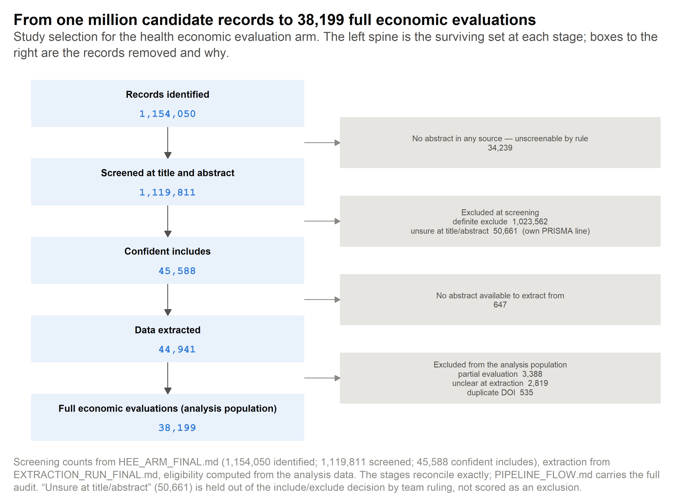
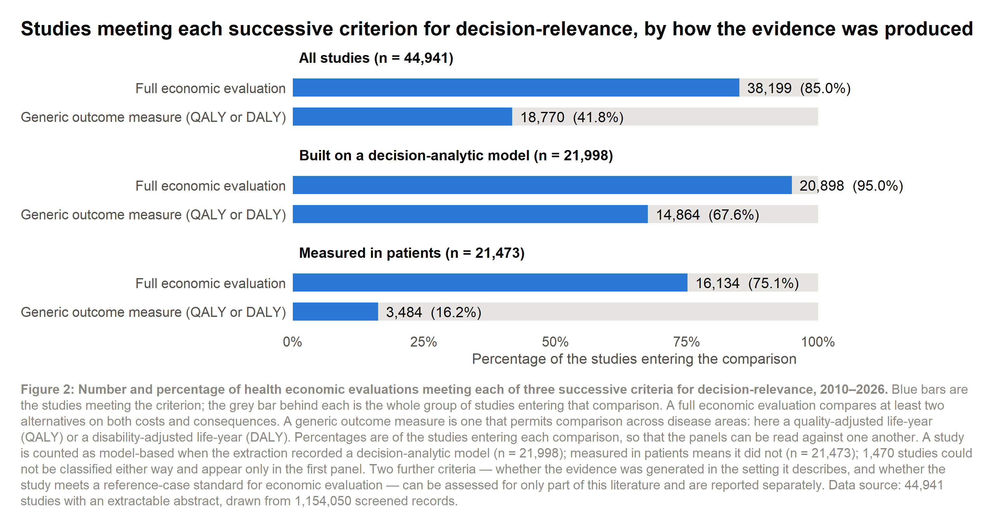
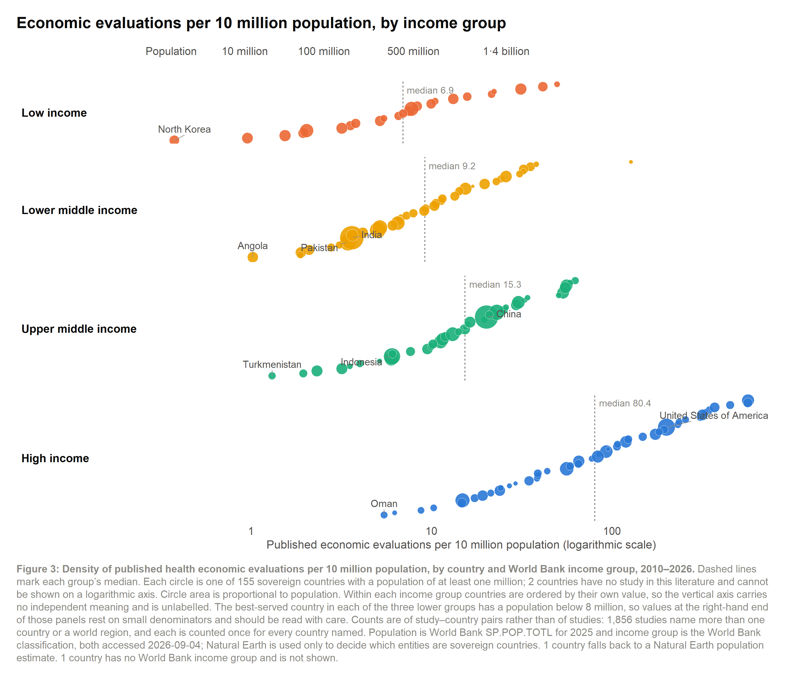
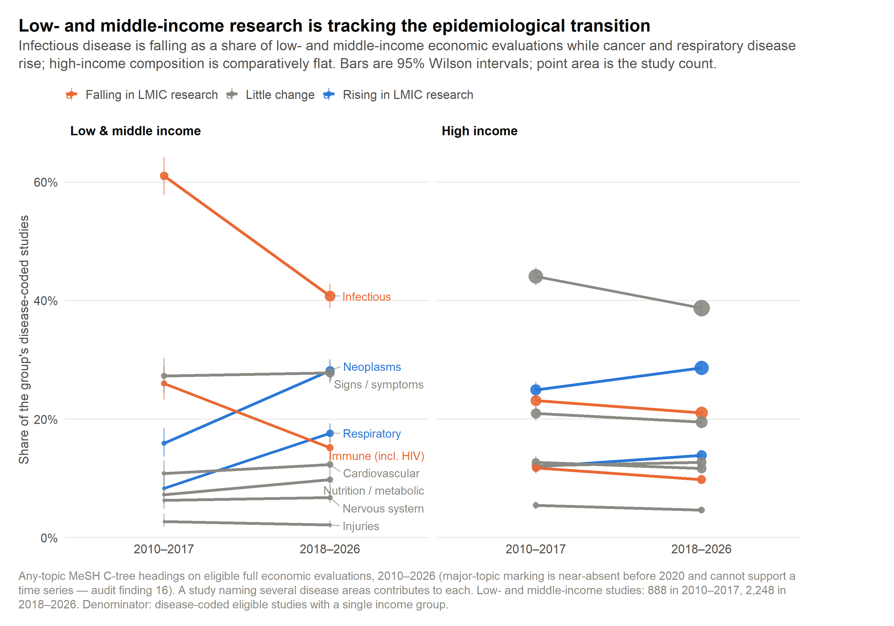
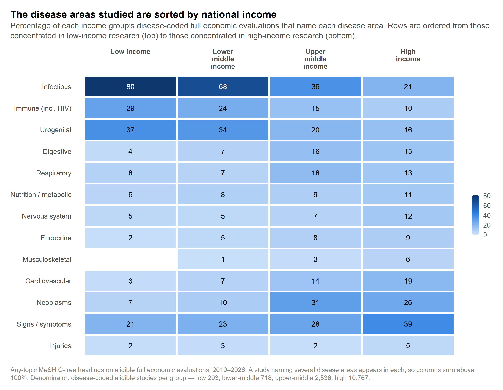
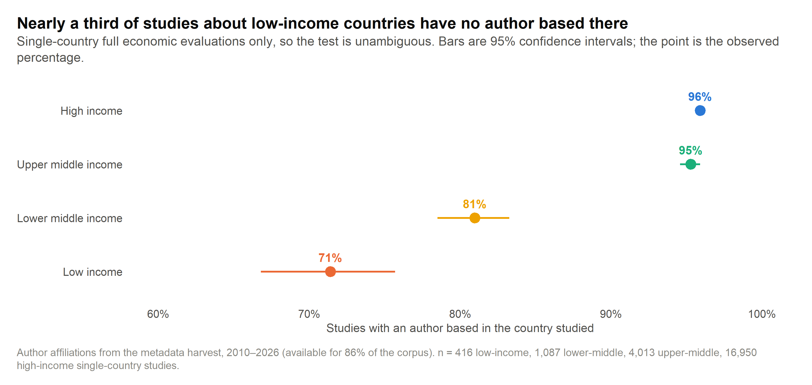
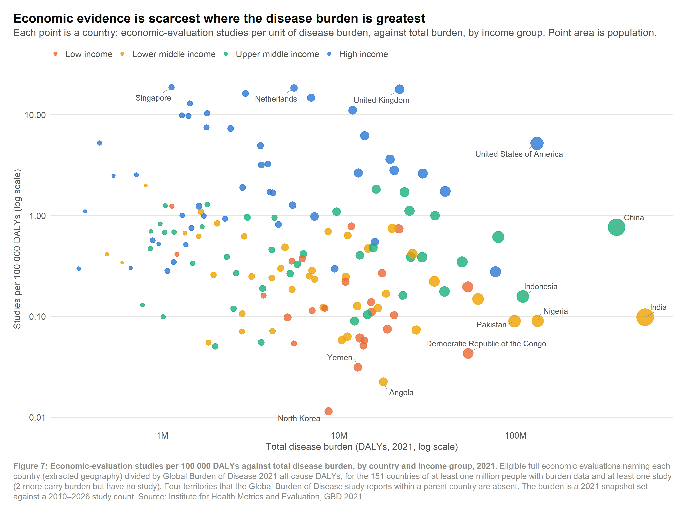
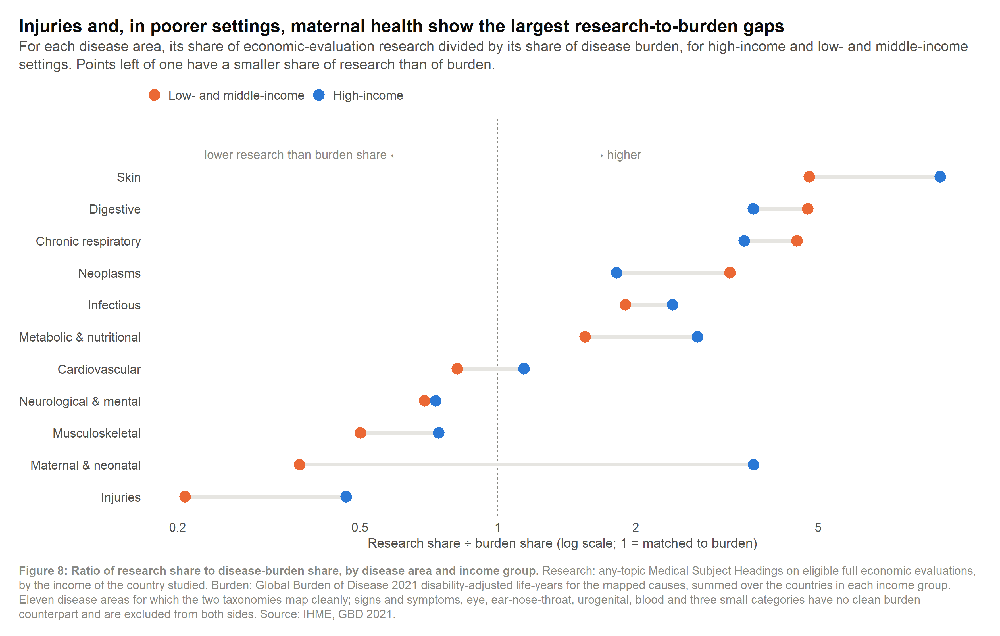

Lancet Paper Figures
Lancet Paper Figures (Core Set)
The tight, ~10 journal figures for the paper submission. Greyscale-safe, descriptive titles, legends present, uncertainty shown.
Core set (VISUALIZATION_PLAN.md): 3.1 cascade · 4.2 density · 4.4 transition · 4.3 disease×income · 4.5 authorship · 5.1 coverage curve · 5.2 burden scatter (GBD) · 6.1 predictors forest · 3.5 method–outcome mismatch · plus PRISMA.

Figure 1 — PRISMA Flow Diagram
Standard PRISMA: 115,405 records → 44,941 extracted → 38,199 eligible full evaluations.

Figure 2 (3.1) — Decision-Usefulness Cascade
Funnel: all records → extracted → eligible → full eval → model-based → QALY → decision-framing. Faceted by income.
Each rung narrows; LMIC survives at higher rates through early rungs but drops at decision-framing. The cascade argument in one figure.

Figure 3 (4.2) — Evidence Density Within & Between Income
Dot strip: studies per 10M population × income group (4-level). Within-group spread vs between-group gap.
Within-group spread (50–141×) dwarfs between-group (12.9×). Some LMICs outperform many HICs. The “indistinguishable” claim was an income-miscoding artefact (fixed).

Figure 4 (4.4) — Epidemiological Transition Trend
Slope: disease mix by income × era (2010–2017 vs 2018–2026). Communicable → NCD shift vs burden shares.
LMIC research shifted communicable→NCD past burden shares; injuries stayed ~1% vs 11% burden. The transition bypassed injuries.

Figure 5 (4.3) — Disease Composition by Income
Heat map: MeSH C-tree disease share × income group (4-level). What diseases dominate where?
Infectious dominates LIC/LMIC; NCDs dominate UMIC/HIC. The disease-income gradient is the baseline for all gap analysis.

Figure 6 (4.5) — In-Country Authorship by Income
Point + CI: local author share × income group. Extracted geography only.
Local authorship drops sharply with income: HIC ~85%, LIC ~30%. 28% of LIC studies have NO local author. Parachute research quantified.

Figure 7 (5.1) — Coverage Curve (Lorenz)
Cumulative studies vs cumulative population (Lorenz-style). Coverage is broad but shallow.
Top 20% of countries (by population) hold ~80% of studies. Broad geographic coverage, but shallow depth.

Figure 8 (5.2) — Burden Mismatch Scatter (GBD)
Log–log scatter: studies ÷ DALYs × income. The 18× gap. GBD 2021 all-cause DALYs.
18× gap in evidence per DALY (HIC vs LIC median). Within-group spread dwarfs between-group. The central GBD finding for the paper.
Figure 9 (6.1) — Predictors Forest Plot
Coefficient / odds-ratio forest: what predicts generic metric use? (income + design + model + disease + year). Shared figure for 6.1–6.3.
To build: logistic regression of
uses_qaly ~ income + design_basis + model_based + disease + year. Strongest Lancet figure — turns descriptive gaps into structural drivers.
Figure 10 (3.5) — Method–Outcome Mismatch
Heat map: econ_eval_type × outcome family. CUA without QALY = mismatch (~9.5% of CUAs). Extraction noise floor (different model calls).
Methods don’t always match their definitional outcome requirements. The noise floor for any method–outcome claim.
Paper Figures Status
| Fig | Script | Status | Notes |
|---|---|---|---|
| 1 | fig-prisma.R |
🛠️ To build | Standard PRISMA |
| 2 | fig-cascade.R |
✅ Built | Decision-usefulness cascade |
| 3 | fig-burden-mismatch.R |
✅ Built | Density panel |
| 4 | fig-companion-transition.R |
✅ Built | Lancet finish of C29 |
| 5 | fig-companion-disease.R |
✅ Built | Lancet finish of C6 |
| 6 | fig-authorship-pattern.R |
✅ Built | Lancet finish of C18 |
| 7 | fig-coverage-curve.R |
🛠️ To build | Lorenz curve |
| 8 | fig-burden-mismatch.R |
✅ Built | Burden scatter (GBD) |
| 9 | fig-forest-predictors.R |
🛠️ To build | Highest priority — structural drivers |
| 10 | fig-forest-predictors.R |
✅ Exploratory | Method–outcome mismatch |
Previous: ← Map Atlas • Back to: Overview